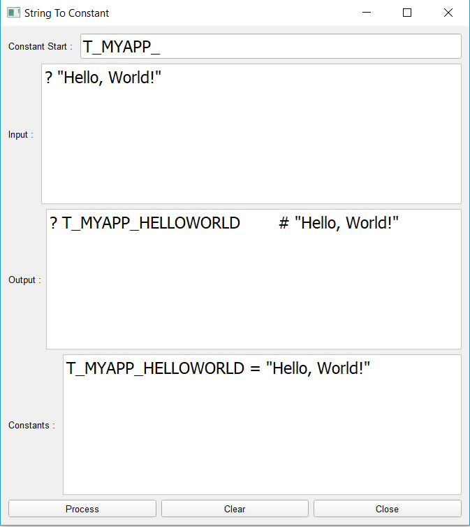
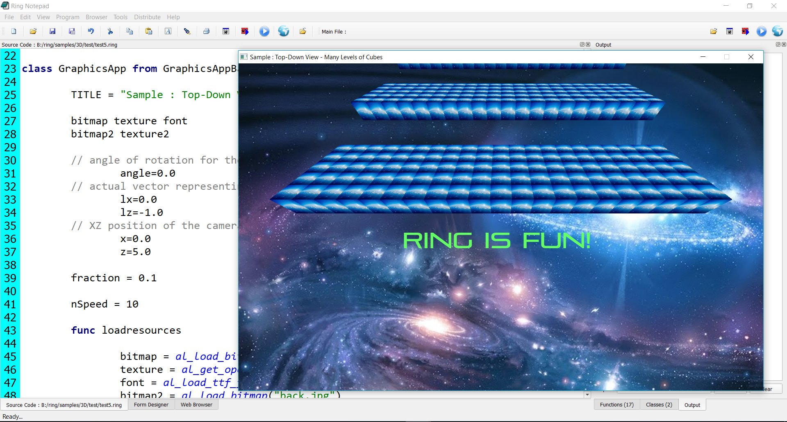
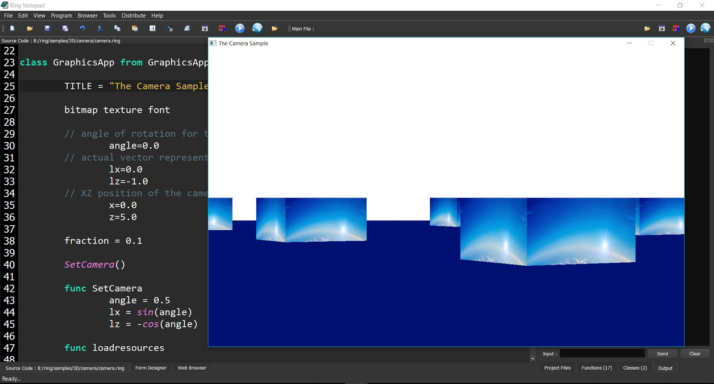
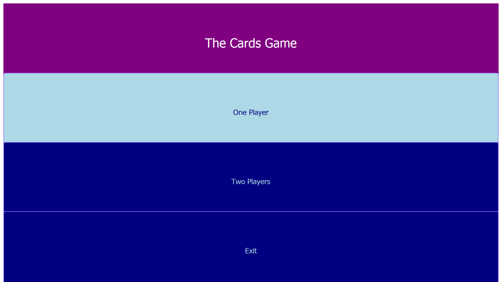

<!DOCTYPE html PUBLIC "-//W3C//DTD XHTML 1.0 Transitional//EN"
  "http://www.w3.org/TR/xhtml1/DTD/xhtml1-transitional.dtd">


<html xmlns="http://www.w3.org/1999/xhtml">
  <head>
    <meta http-equiv="Content-Type" content="text/html; charset=utf-8" />
    
    <title>What is new in Ring 1.8? &mdash; Ring 1.9 documentation</title>
    
    <link rel="stylesheet" href="_static/classic.css" type="text/css" />
    <link rel="stylesheet" href="_static/pygments.css" type="text/css" />
    
    <script type="text/javascript">
      var DOCUMENTATION_OPTIONS = {
        URL_ROOT:    './',
        VERSION:     '1.9',
        COLLAPSE_INDEX: false,
        FILE_SUFFIX: '.html',
        HAS_SOURCE:  true
      };
    </script>
    <script type="text/javascript" src="_static/jquery.js"></script>
    <script type="text/javascript" src="_static/underscore.js"></script>
    <script type="text/javascript" src="_static/doctools.js"></script>
    <script type="text/javascript" src="https://cdn.mathjax.org/mathjax/latest/MathJax.js?config=TeX-AMS-MML_HTMLorMML"></script>
    <link rel="top" title="Ring 1.9 documentation" href="index.html" />
    <link rel="next" title="What is new in Ring 1.7?" href="whatisnew7.html" />
    <link rel="prev" title="What is new in Ring 1.9?" href="whatisnew9.html" /> 
  </head>
  <body role="document">
    <div class="related" role="navigation" aria-label="related navigation">
      <h3>Navigation</h3>
      <ul>
        <li class="right" style="margin-right: 10px">
          <a href="genindex.html" title="General Index"
             accesskey="I">index</a></li>
        <li class="right" >
          <a href="whatisnew7.html" title="What is new in Ring 1.7?"
             accesskey="N">next</a> |</li>
        <li class="right" >
          <a href="whatisnew9.html" title="What is new in Ring 1.9?"
             accesskey="P">previous</a> |</li>
        <li class="nav-item nav-item-0"><a href="index.html">Ring 1.9 documentation</a> &raquo;</li> 
      </ul>
    </div>  

    <div class="document">
      <div class="documentwrapper">
        <div class="bodywrapper">
          <div class="body" role="main">
            
  <div class="section" id="what-is-new-in-ring-1-8">
<span id="index-0"></span><h1>What is new in Ring 1.8?<a class="headerlink" href="#what-is-new-in-ring-1-8" title="Permalink to this headline">¶</a></h1>
<p>In this chapter we will learn about the changes and new features in Ring 1.8 release.</p>
<div class="section" id="list-of-changes-and-new-features">
<span id="index-1"></span><h2>List of changes and new features<a class="headerlink" href="#list-of-changes-and-new-features" title="Permalink to this headline">¶</a></h2>
<p>Ring 1.8 comes with the next features!</p>
<ul class="simple">
<li>Better Performance</li>
<li>Find in files Application</li>
<li>String2Constant Application</li>
<li>StopWatch Application</li>
<li>More 3D Samples</li>
<li>Compiling on Manjaro Linux</li>
<li>Using This in the class region as Self</li>
<li>Default value for object attributes is NULL</li>
<li>The For Loops uses the local scope</li>
<li>Merge binary characters</li>
<li>FoxRing Library</li>
<li>Better Form Designer</li>
<li>Better Cards Game</li>
<li>Better RingQt</li>
<li>Better Code Generator For Extensions</li>
<li>Better Ring Compiler and VM</li>
<li>Notes to extensions creators</li>
</ul>
</div>
<div class="section" id="better-performance">
<span id="index-2"></span><h2>Better Performance<a class="headerlink" href="#better-performance" title="Permalink to this headline">¶</a></h2>
<p>Ring 1.8 is faster than Ring 1.7</p>
<p>The performance gain is between 10% and 100% based on the application.</p>
<p>Check the 3D samples in this release to get an idea about the current performance.</p>
<p>For more information check the Performance Tips chapter.</p>
</div>
<div class="section" id="find-in-files-application">
<span id="index-3"></span><h2>Find in files Application<a class="headerlink" href="#find-in-files-application" title="Permalink to this headline">¶</a></h2>
<p>Ring 1.8 comes with Find in files application</p>

</div>
<div class="section" id="string2constant-application">
<span id="index-4"></span><h2>String2Constant Application<a class="headerlink" href="#string2constant-application" title="Permalink to this headline">¶</a></h2>
<p>Ring 1.8 comes with String2Constant application</p>
<p>Using this tool we can convert the source code to be based on constants instead of string literals</p>
<p>Then we can store constants in separate source code files that we can translate to different languages</p>
<p>Where we can have special file for each language, like (English.ring, Arabic.ring and so on)</p>
<p>Using this simple tool, the Form Designer is translated to the Arabic language.</p>
<p>For more information check the Multi-language Applications chapter.</p>

</div>
<div class="section" id="stopwatch-application">
<span id="index-5"></span><h2>StopWatch Application<a class="headerlink" href="#stopwatch-application" title="Permalink to this headline">¶</a></h2>
<p>Ring 1.8 comes with StopWatch application</p>

</div>
<div class="section" id="more-3d-samples">
<span id="index-6"></span><h2>More 3D Samples<a class="headerlink" href="#more-3d-samples" title="Permalink to this headline">¶</a></h2>
<p>Ring 1.8 comes with more 3D Samples</p>
<p>The next screen shot for the Top-Down view - Many levels of cubes sample</p>

<p>The next screen shot for the Camera Sample</p>

<p>The next screen shot for the Camera and background sample</p>
<p>Developer : Azzeddine Remmal</p>

</div>
<div class="section" id="compiling-on-manjaro-linux">
<span id="index-7"></span><h2>Compiling on Manjaro Linux<a class="headerlink" href="#compiling-on-manjaro-linux" title="Permalink to this headline">¶</a></h2>
<p>Ring 1.8 is tested on Manjaro Linux too</p>
<p>Tests by : Iip Rifai</p>

</div>
<div class="section" id="using-this-in-the-class-region-as-self">
<span id="index-8"></span><h2>Using This in the class region as Self<a class="headerlink" href="#using-this-in-the-class-region-as-self" title="Permalink to this headline">¶</a></h2>
<p>The class region is the region that comes after the class name and before any method.</p>
<p>Now we can use This in the class region as Self.</p>
<p>Example:</p>
<div class="highlight-ring"><div class="highlight"><pre><span></span><span class="k">func</span> <span class="n">main</span>

        <span class="n">o1</span> <span class="o">=</span> <span class="k">new</span> <span class="n">program</span> <span class="p">{</span>
                <span class="n">test</span><span class="p">()</span>
        <span class="p">}</span>

        <span class="o">?</span> <span class="n">o1</span>

<span class="k">class</span> <span class="n">program</span>

        <span class="n">this</span><span class="p">.</span><span class="n">name</span> <span class="o">=</span> <span class="s">&quot;My Application&quot;</span>
        <span class="n">this</span><span class="p">.</span><span class="n">version</span> <span class="o">=</span> <span class="s">&quot;1.0&quot;</span>
        <span class="o">?</span> <span class="n">name</span> <span class="o">?</span> <span class="n">version</span>

        <span class="k">func</span> <span class="n">test</span>
                <span class="o">?</span> <span class="s">&quot;Name    = &quot;</span> <span class="o">+</span> <span class="n">name</span>
                <span class="o">?</span> <span class="s">&quot;Version = &quot;</span> <span class="o">+</span> <span class="n">version</span>
</pre></div>
</div>
<p>Output</p>
<div class="highlight-none"><div class="highlight"><pre><span></span>My Application
1.0
Name    = My Application
Version = 1.0
name: My Application
version: 1.0
</pre></div>
</div>
<div class="admonition note">
<p class="first admonition-title">Note</p>
<p class="last">When we use braces to change the current active object, Using This we can still point to the class.</p>
</div>
<div class="admonition tip">
<p class="first admonition-title">Tip</p>
<p class="last">The difference between This and Self is that Self point to the current active object that we can change using braces.</p>
</div>
<p>Remember that in most cases we don&#8217;t need to use This or Self in the class region</p>
<p>We can write</p>
<div class="highlight-ring"><div class="highlight"><pre><span></span><span class="k">class</span> <span class="n">program</span> <span class="n">name</span> <span class="n">version</span>
</pre></div>
</div>
<p>Or</p>
<div class="highlight-ring"><div class="highlight"><pre><span></span><span class="k">class</span> <span class="n">program</span> <span class="n">name</span><span class="o">=</span><span class="s">&quot;My Application&quot;</span> <span class="n">version</span><span class="o">=</span><span class="s">&quot;1.0&quot;</span>
</pre></div>
</div>
<div class="admonition note">
<p class="first admonition-title">Note</p>
<p class="last">We use This or Self in the class region just to avoid conflict with global variables that are defined with the same name.</p>
</div>
</div>
<div class="section" id="default-value-for-object-attributes-is-null">
<span id="index-9"></span><h2>Default value for object attributes is NULL<a class="headerlink" href="#default-value-for-object-attributes-is-null" title="Permalink to this headline">¶</a></h2>
<p>Starting from Ring 1.8 the default value for object attributes is NULL</p>
<p>In Ring, the NULL value is just an empty string or a string that contains &#8220;NULL&#8221;</p>
<p>We can check for NULL values using the isNULL() function</p>
<p>Example:</p>
<div class="highlight-ring"><div class="highlight"><pre><span></span><span class="n">oProgram</span> <span class="o">=</span> <span class="k">new</span> <span class="n">Program</span>
<span class="o">?</span> <span class="n">oProgram</span><span class="p">.</span><span class="n">name</span>
<span class="o">?</span> <span class="n">oProgram</span><span class="p">.</span><span class="n">version</span>
<span class="o">?</span> <span class="n">isNULL</span><span class="p">(</span><span class="n">oProgram</span><span class="p">.</span><span class="n">name</span><span class="p">)</span>
<span class="o">?</span> <span class="n">isNULL</span><span class="p">(</span><span class="n">oProgram</span><span class="p">.</span><span class="n">version</span><span class="p">)</span>
<span class="n">oProgram</span> <span class="p">{</span> <span class="n">name</span><span class="o">=</span><span class="s">&quot;My Application&quot;</span> <span class="n">version</span><span class="o">=</span><span class="s">&quot;1.0&quot;</span> <span class="p">}</span>
<span class="o">?</span> <span class="n">isNULL</span><span class="p">(</span><span class="n">oProgram</span><span class="p">.</span><span class="n">name</span><span class="p">)</span>
<span class="o">?</span> <span class="n">isNULL</span><span class="p">(</span><span class="n">oProgram</span><span class="p">.</span><span class="n">version</span><span class="p">)</span>
<span class="o">?</span> <span class="n">oProgram</span>

<span class="k">class</span> <span class="n">program</span>
        <span class="n">name</span>
        <span class="n">version</span>
</pre></div>
</div>
<p>Output:</p>
<div class="highlight-none"><div class="highlight"><pre><span></span>NULL
NULL
1
1
0
0
name: My Application
version: 1.0
</pre></div>
</div>
<p>In previous versions of Ring, trying to access the object attribute before assigning a value to it</p>
<p>Will lead to runtime error and you can&#8217;t check it using isnull()</p>
<p>The only way was assigning a value or using try/catch/end</p>
<p>We changed this behavior so we can have full control in seamless way.</p>
</div>
<div class="section" id="the-for-loops-uses-the-local-scope">
<span id="index-10"></span><h2>The For Loops uses the local scope<a class="headerlink" href="#the-for-loops-uses-the-local-scope" title="Permalink to this headline">¶</a></h2>
<p>In Ring 1.8, when the For Loop defines new identifier (variable) it will define it in the local scope.</p>
<p>Example:</p>
<div class="highlight-ring"><div class="highlight"><pre><span></span><span class="n">x</span> <span class="o">=</span> <span class="mi">10</span>
<span class="o">?</span> <span class="n">x</span>             <span class="c"># Print 10</span>
<span class="n">test1</span><span class="p">()</span>
<span class="o">?</span> <span class="n">x</span>             <span class="c"># Print 10</span>
<span class="n">test2</span><span class="p">()</span>
<span class="o">?</span> <span class="n">x</span>             <span class="c"># Print 10</span>

<span class="k">func</span> <span class="n">test1</span>
        <span class="k">for</span> <span class="n">x</span> <span class="o">=</span> <span class="mi">1</span> <span class="k">to</span> <span class="mi">5</span>
        <span class="k">next</span>
        <span class="o">?</span> <span class="n">x</span>     <span class="c"># Print 6</span>

<span class="k">func</span> <span class="n">test2</span>
        <span class="kt">list</span> <span class="o">=</span> <span class="mi">1</span><span class="p">:</span><span class="mi">5</span>
        <span class="k">for</span> <span class="n">x</span> <span class="k">in</span> <span class="kt">list</span>
        <span class="k">next</span>
        <span class="o">?</span> <span class="n">x</span>     <span class="c"># Print NULL (The &quot;For In&quot; loop will kill the reference after the loop)</span>
</pre></div>
</div>
<p>Output:</p>
<div class="highlight-ring"><div class="highlight"><pre><span></span><span class="mi">10</span>
<span class="mi">6</span>
<span class="mi">10</span>
<span class="kp">NULL</span>
<span class="mi">10</span>
</pre></div>
</div>
</div>
<div class="section" id="merge-binary-characters">
<span id="index-11"></span><h2>Merge binary characters<a class="headerlink" href="#merge-binary-characters" title="Permalink to this headline">¶</a></h2>
<p>From Ring 1.0 we can create binary strings and do operations on these strings.</p>
<p>Now in Ring 1.8, we can get individual characters from these strings and merge them together using
the &#8216;+&#8217; operator.</p>
<p>Example:</p>
<div class="highlight-ring"><div class="highlight"><pre><span></span><span class="n">cStr</span> <span class="o">=</span> <span class="s">&quot;Welcome&quot;</span>
<span class="o">?</span> <span class="n">cstr</span><span class="o">[</span><span class="mi">1</span><span class="o">]</span> <span class="o">+</span> <span class="n">cstr</span><span class="o">[</span><span class="mi">2</span><span class="o">]</span> <span class="o">+</span> <span class="n">cStr</span><span class="o">[</span><span class="mi">5</span><span class="o">]</span>
<span class="n">v</span> <span class="o">=</span> <span class="n">cstr</span><span class="o">[</span><span class="mi">1</span><span class="o">]</span> <span class="o">+</span> <span class="n">cstr</span><span class="o">[</span><span class="mi">2</span><span class="o">]</span> <span class="o">+</span> <span class="n">cStr</span><span class="o">[</span><span class="mi">5</span><span class="o">]</span>
<span class="o">?</span> <span class="n">v</span>
<span class="o">?</span> <span class="n">len</span><span class="p">(</span><span class="n">v</span><span class="p">)</span>
<span class="n">c1</span> <span class="o">=</span> <span class="n">cStr</span><span class="o">[</span><span class="mi">1</span><span class="o">]</span>
<span class="o">?</span> <span class="n">c1</span>
<span class="n">aList</span> <span class="o">=</span> <span class="o">[</span><span class="mi">1</span><span class="p">,</span><span class="mi">2</span><span class="p">,</span><span class="mi">3</span><span class="o">]</span>
<span class="n">cStr</span> <span class="o">=</span> <span class="s">&quot;&quot;</span>
<span class="k">for</span> <span class="n">item</span> <span class="k">in</span> <span class="n">aList</span>
        <span class="n">cStr</span> <span class="o">+=</span> <span class="n">int2bytes</span><span class="p">(</span><span class="n">item</span><span class="p">)</span>
<span class="k">next</span>
<span class="o">?</span> <span class="s">&quot;All String&quot;</span>
<span class="o">?</span> <span class="n">len</span><span class="p">(</span><span class="n">cStr</span><span class="p">)</span>
<span class="o">?</span> <span class="s">&quot;First Part&quot;</span>
<span class="n">n1</span> <span class="o">=</span> <span class="n">cStr</span><span class="o">[</span><span class="mi">1</span><span class="o">]</span> <span class="o">+</span> <span class="n">cStr</span><span class="o">[</span><span class="mi">2</span><span class="o">]</span> <span class="o">+</span> <span class="n">cStr</span><span class="o">[</span><span class="mi">3</span><span class="o">]</span> <span class="o">+</span> <span class="n">cStr</span><span class="o">[</span><span class="mi">4</span><span class="o">]</span>
<span class="o">?</span> <span class="n">len</span><span class="p">(</span><span class="n">n1</span><span class="p">)</span>
<span class="o">?</span> <span class="s">&quot;Second Part&quot;</span>
<span class="n">n2</span> <span class="o">=</span> <span class="n">cStr</span><span class="o">[</span><span class="mi">5</span><span class="o">]</span> <span class="o">+</span> <span class="n">cStr</span><span class="o">[</span><span class="mi">6</span><span class="o">]</span> <span class="o">+</span> <span class="n">cStr</span><span class="o">[</span><span class="mi">7</span><span class="o">]</span> <span class="o">+</span> <span class="n">cStr</span><span class="o">[</span><span class="mi">8</span><span class="o">]</span>
<span class="o">?</span> <span class="n">len</span><span class="p">(</span><span class="n">n2</span><span class="p">)</span>
<span class="o">?</span> <span class="s">&quot;Third Part&quot;</span>
<span class="n">n3</span> <span class="o">=</span> <span class="n">cStr</span><span class="o">[</span><span class="mi">9</span><span class="o">]</span> <span class="o">+</span> <span class="n">cStr</span><span class="o">[</span><span class="mi">10</span><span class="o">]</span> <span class="o">+</span> <span class="n">cStr</span><span class="o">[</span><span class="mi">11</span><span class="o">]</span> <span class="o">+</span> <span class="n">cStr</span><span class="o">[</span><span class="mi">12</span><span class="o">]</span>
<span class="o">?</span> <span class="n">len</span><span class="p">(</span><span class="n">n3</span><span class="p">)</span>
<span class="o">?</span> <span class="s">&quot;All String&quot;</span>
<span class="n">cString</span> <span class="o">=</span> <span class="n">cStr</span><span class="o">[</span><span class="mi">1</span><span class="o">]</span> <span class="o">+</span> <span class="n">cStr</span><span class="o">[</span><span class="mi">2</span><span class="o">]</span> <span class="o">+</span> <span class="n">cStr</span><span class="o">[</span><span class="mi">3</span><span class="o">]</span> <span class="o">+</span> <span class="n">cStr</span><span class="o">[</span><span class="mi">4</span><span class="o">]</span> <span class="o">+</span>
          <span class="n">cStr</span><span class="o">[</span><span class="mi">5</span><span class="o">]</span> <span class="o">+</span> <span class="n">cStr</span><span class="o">[</span><span class="mi">6</span><span class="o">]</span> <span class="o">+</span> <span class="n">cStr</span><span class="o">[</span><span class="mi">7</span><span class="o">]</span> <span class="o">+</span> <span class="n">cStr</span><span class="o">[</span><span class="mi">8</span><span class="o">]</span> <span class="o">+</span>
          <span class="n">cStr</span><span class="o">[</span><span class="mi">9</span><span class="o">]</span> <span class="o">+</span> <span class="n">cStr</span><span class="o">[</span><span class="mi">10</span><span class="o">]</span> <span class="o">+</span> <span class="n">cStr</span><span class="o">[</span><span class="mi">11</span><span class="o">]</span> <span class="o">+</span> <span class="n">cStr</span><span class="o">[</span><span class="mi">12</span><span class="o">]</span>
<span class="o">?</span> <span class="n">len</span><span class="p">(</span><span class="n">cString</span><span class="p">)</span>
<span class="o">?</span> <span class="n">ascii</span><span class="p">(</span><span class="n">cStr</span><span class="o">[</span><span class="mi">1</span><span class="o">]</span><span class="p">)</span>
<span class="o">?</span> <span class="n">len</span><span class="p">(</span><span class="n">cStr</span><span class="o">[</span><span class="mi">2</span><span class="o">]</span><span class="p">)</span>
</pre></div>
</div>
<p>Output:</p>
<div class="highlight-ring"><div class="highlight"><pre><span></span>Weo
Weo
3
W
All String
12
First Part
4
Second Part
4       
Third Part
4
All String
12
1
1
</pre></div>
</div>
</div>
<div class="section" id="foxring-library">
<span id="index-12"></span><h2>FoxRing Library<a class="headerlink" href="#foxring-library" title="Permalink to this headline">¶</a></h2>
<p>Developer: Jose Rosado</p>
<p>A class with some of the functions I used in FoxPro</p>
<p>Example:</p>
<div class="highlight-ring"><div class="highlight"><pre><span></span><span class="k">Load</span> <span class="s">&quot;foxring.ring&quot;</span>

<span class="n">mf</span> <span class="o">=</span> <span class="k">new</span> <span class="n">frFunctions</span>
<span class="o">?</span> <span class="n">mf</span><span class="p">.</span><span class="n">frAbs</span><span class="p">(</span><span class="o">-</span><span class="mi">45</span><span class="p">)</span>
<span class="o">?</span> <span class="n">mf</span><span class="p">.</span><span class="n">frAbs</span><span class="p">(</span><span class="mi">10</span><span class="o">-</span><span class="mi">30</span><span class="p">)</span>
<span class="o">?</span> <span class="n">mf</span><span class="p">.</span><span class="n">frAbs</span><span class="p">(</span><span class="mi">30</span><span class="o">-</span><span class="mi">10</span><span class="p">)</span>

<span class="o">?</span> <span class="n">mf</span><span class="p">.</span><span class="n">frTransform</span><span class="p">(</span><span class="s">&quot;    Ring is a good language    &quot;</span><span class="p">,</span>
                 <span class="s">&quot;@! !!!!!!!!!!!!!!!!!!!!!!!!!!!!!!!!!!!&quot;</span><span class="p">)</span>
<span class="o">?</span> <span class="n">mf</span><span class="p">.</span><span class="n">frAllTrim</span><span class="p">(</span><span class="s">&quot;    Ring is a good language    &quot;</span><span class="p">,</span> <span class="kp">Null</span><span class="p">)</span>
</pre></div>
</div>
<p>Output:</p>
<div class="highlight-ring"><div class="highlight"><pre><span></span><span class="mi">45</span>
<span class="mi">20</span>
<span class="mi">20</span>
    <span class="n">RING</span> <span class="n">IS</span> <span class="n">A</span> <span class="n">GOOD</span> <span class="n">LANGUAGE</span>
<span class="n">Ring</span> <span class="n">is</span> <span class="n">a</span> <span class="n">good</span> <span class="n">language</span>
</pre></div>
</div>
</div>
<div class="section" id="better-form-designer">
<span id="index-13"></span><h2>Better Form Designer<a class="headerlink" href="#better-form-designer" title="Permalink to this headline">¶</a></h2>
<ol class="arabic simple">
<li>Layout Control - Display the control name when loading forms.</li>
<li>Button Control - Display the button images written using relative path.</li>
<li>Table  Control - Display the control name when loading forms.</li>
<li>Better behavior in &#8220;Bring to front&#8221; and &#8220;Send to back&#8221; operations.</li>
<li>New buttons are added to the toolbar (Duplicate, Bring to front, Send to back, Delete).</li>
<li>Using layouts in (Menubar designer, Window Flags window, Selecting Objects window).</li>
<li>Better behavior for displaying the properties window when changing the selected objects.</li>
<li>New buttons are added to move and resize multiple selection of objects.</li>
<li>Window Properties - Add button to select the layout.</li>
<li>Opening forms and switching between files is faster.</li>
<li>Objects Order window.</li>
<li>Select Objects window.</li>
<li>When we change the control name, the name will be updated in layout objects.</li>
</ol>
</div>
<div class="section" id="better-cards-game">
<span id="index-14"></span><h2>Better Cards Game<a class="headerlink" href="#better-cards-game" title="Permalink to this headline">¶</a></h2>
<p>The Cards game is updated and we can play with the Computer</p>

</div>
<div class="section" id="better-ringqt">
<span id="index-15"></span><h2>Better RingQt<a class="headerlink" href="#better-ringqt" title="Permalink to this headline">¶</a></h2>
<ul class="simple">
<li>The next classes are added to RingQt</li>
</ul>
<ol class="arabic simple">
<li>QTabBar</li>
<li>QFile</li>
<li>QFileDevice</li>
<li>QStandardPaths</li>
<li>QDir</li>
<li>QQuickWidget</li>
<li>QQmlError</li>
<li>QScrollBar</li>
</ol>
<ul class="simple">
<li>RingQt for Android is updated to support modern versions of Qt</li>
</ul>
<p>Tested using</p>
<ol class="arabic simple">
<li>Qt 5.5.1</li>
<li>Qt 5.9.5</li>
<li>Qt 5.11.0</li>
</ol>
<ul class="simple">
<li>In RingQt for Android, The Ring Object File (ringo) will be executed directly from resources.</li>
</ul>
</div>
<div class="section" id="better-code-generator-for-extensions">
<span id="index-16"></span><h2>Better Code Generator For Extensions<a class="headerlink" href="#better-code-generator-for-extensions" title="Permalink to this headline">¶</a></h2>
<p>New Option: StaticMethods</p>
<p>Starting from Ring 1.8 the code generator support the staticmethods option.</p>
<p>So the code generator can know that the class doesn&#8217;t need an object to call the methods.</p>
<p>Example:</p>
<div class="highlight-none"><div class="highlight"><pre><span></span>&lt;class&gt;
name: QStandardPaths
para: void
nonew
staticmethods
&lt;/class&gt;

QString displayName(QStandardPaths::StandardLocation type)
QString findExecutable(QString executableName, QStringList paths))
</pre></div>
</div>
</div>
<div class="section" id="better-ring-compiler-and-vm">
<span id="index-17"></span><h2>Better Ring Compiler and VM<a class="headerlink" href="#better-ring-compiler-and-vm" title="Permalink to this headline">¶</a></h2>
<ol class="arabic simple">
<li>Better loading for files in relative paths</li>
<li>Code Optimization for eval() function</li>
<li>Better Memory Pool</li>
<li>When embedding Ring in Ring, the error in the hosted environment will not close the host</li>
</ol>
<p>Example:</p>
<div class="highlight-ring"><div class="highlight"><pre><span></span><span class="o">?</span> <span class="s">&quot;Start the test!&quot;</span>

<span class="n">pState</span> <span class="o">=</span> <span class="n">ring_state_init</span><span class="p">()</span>

<span class="n">ring_state_runcode</span><span class="p">(</span><span class="n">pState</span><span class="p">,</span><span class="s">&quot; ? &#39;Let us try having an error&#39; ? x&quot;</span><span class="p">)</span>

<span class="n">ring_state_delete</span><span class="p">(</span><span class="n">pState</span><span class="p">)</span>

<span class="o">?</span> <span class="s">&quot;&quot;</span>
<span class="o">?</span> <span class="s">&quot;End of test!&quot;</span>
</pre></div>
</div>
<p>Output:</p>
<div class="highlight-none"><div class="highlight"><pre><span></span>Start the test!
Let us try having an error

Line 1 Error (R24) : Using uninitialized variable : x
in file Ring_EmbeddedCode
End of test!
</pre></div>
</div>
<ol class="arabic simple" start="5">
<li>The compiler will ignore new lines after keywords that expect tokens after it</li>
</ol>
<p>Example:</p>
<div class="highlight-ring"><div class="highlight"><pre><span></span><span class="k">see</span>
<span class="s">&quot;</span>
        <span class="n">Hello</span><span class="p">,</span> <span class="n">World</span><span class="o">!</span>
<span class="s">&quot;</span>
<span class="n">test</span><span class="p">()</span>

<span class="k">func</span>
<span class="c">#======================#</span>
        <span class="n">Test</span>
<span class="c">#======================#</span>

        <span class="o">?</span>
        <span class="s">&quot;</span>

        <span class="n">Hello</span> <span class="k">from</span> <span class="n">the</span> <span class="n">Test</span> <span class="n">function</span>

        <span class="s">&quot;</span>
</pre></div>
</div>
<p>Output:</p>
<div class="highlight-none"><div class="highlight"><pre><span></span>Hello, World!


Hello from the Test function
</pre></div>
</div>
<ol class="arabic simple" start="6">
<li>Better code (faster) for the main loop, special loop for eval() function.</li>
<li>Better code (faster) for tracking C pointers to avoid using NULL pointers.</li>
<li>Better code (faster) for getting the self object using braces.</li>
</ol>
</div>
<div class="section" id="notes-to-extensions-creators">
<span id="index-18"></span><h2>Notes to extensions creators<a class="headerlink" href="#notes-to-extensions-creators" title="Permalink to this headline">¶</a></h2>
<p>If you have created new extensions for Ring in the C/C++ languages.</p>
<p>You have to rebuild your extension (Generate the DLL file again using Ring 1.8 header files) before usage with Ring 1.8</p>
<p>Because we changed the internal structure of the VM, but no changes to the code are required. just rebuild.</p>
</div>
</div>


          </div>
        </div>
      </div>
      <div class="sphinxsidebar" role="navigation" aria-label="main navigation">
        <div class="sphinxsidebarwrapper">
  <h3><a href="index.html">Table Of Contents</a></h3>
  <ul>
<li><a class="reference internal" href="#">What is new in Ring 1.8?</a><ul>
<li><a class="reference internal" href="#list-of-changes-and-new-features">List of changes and new features</a></li>
<li><a class="reference internal" href="#better-performance">Better Performance</a></li>
<li><a class="reference internal" href="#find-in-files-application">Find in files Application</a></li>
<li><a class="reference internal" href="#string2constant-application">String2Constant Application</a></li>
<li><a class="reference internal" href="#stopwatch-application">StopWatch Application</a></li>
<li><a class="reference internal" href="#more-3d-samples">More 3D Samples</a></li>
<li><a class="reference internal" href="#compiling-on-manjaro-linux">Compiling on Manjaro Linux</a></li>
<li><a class="reference internal" href="#using-this-in-the-class-region-as-self">Using This in the class region as Self</a></li>
<li><a class="reference internal" href="#default-value-for-object-attributes-is-null">Default value for object attributes is NULL</a></li>
<li><a class="reference internal" href="#the-for-loops-uses-the-local-scope">The For Loops uses the local scope</a></li>
<li><a class="reference internal" href="#merge-binary-characters">Merge binary characters</a></li>
<li><a class="reference internal" href="#foxring-library">FoxRing Library</a></li>
<li><a class="reference internal" href="#better-form-designer">Better Form Designer</a></li>
<li><a class="reference internal" href="#better-cards-game">Better Cards Game</a></li>
<li><a class="reference internal" href="#better-ringqt">Better RingQt</a></li>
<li><a class="reference internal" href="#better-code-generator-for-extensions">Better Code Generator For Extensions</a></li>
<li><a class="reference internal" href="#better-ring-compiler-and-vm">Better Ring Compiler and VM</a></li>
<li><a class="reference internal" href="#notes-to-extensions-creators">Notes to extensions creators</a></li>
</ul>
</li>
</ul>

  <h4>Previous topic</h4>
  <p class="topless"><a href="whatisnew9.html"
                        title="previous chapter">What is new in Ring 1.9?</a></p>
  <h4>Next topic</h4>
  <p class="topless"><a href="whatisnew7.html"
                        title="next chapter">What is new in Ring 1.7?</a></p>
  <div role="note" aria-label="source link">
    <h3>This Page</h3>
    <ul class="this-page-menu">
      <li><a href="_sources/whatisnew8.txt"
            rel="nofollow">Show Source</a></li>
    </ul>
   </div>
<div id="searchbox" style="display: none" role="search">
  <h3>Quick search</h3>
    <form class="search" action="search.html" method="get">
      <input type="text" name="q" />
      <input type="submit" value="Go" />
      <input type="hidden" name="check_keywords" value="yes" />
      <input type="hidden" name="area" value="default" />
    </form>
    <p class="searchtip" style="font-size: 90%">
    Enter search terms or a module, class or function name.
    </p>
</div>
<script type="text/javascript">$('#searchbox').show(0);</script>
        </div>
      </div>
      <div class="clearer"></div>
    </div>
    <div class="related" role="navigation" aria-label="related navigation">
      <h3>Navigation</h3>
      <ul>
        <li class="right" style="margin-right: 10px">
          <a href="genindex.html" title="General Index"
             >index</a></li>
        <li class="right" >
          <a href="whatisnew7.html" title="What is new in Ring 1.7?"
             >next</a> |</li>
        <li class="right" >
          <a href="whatisnew9.html" title="What is new in Ring 1.9?"
             >previous</a> |</li>
        <li class="nav-item nav-item-0"><a href="index.html">Ring 1.9 documentation</a> &raquo;</li> 
      </ul>
    </div>
    <div class="footer" role="contentinfo">
        &copy; Copyright 2016-2018, Ring Team.
      Created using <a href="http://sphinx-doc.org/">Sphinx</a> 1.3.1.
    </div>
  </body>
</html>